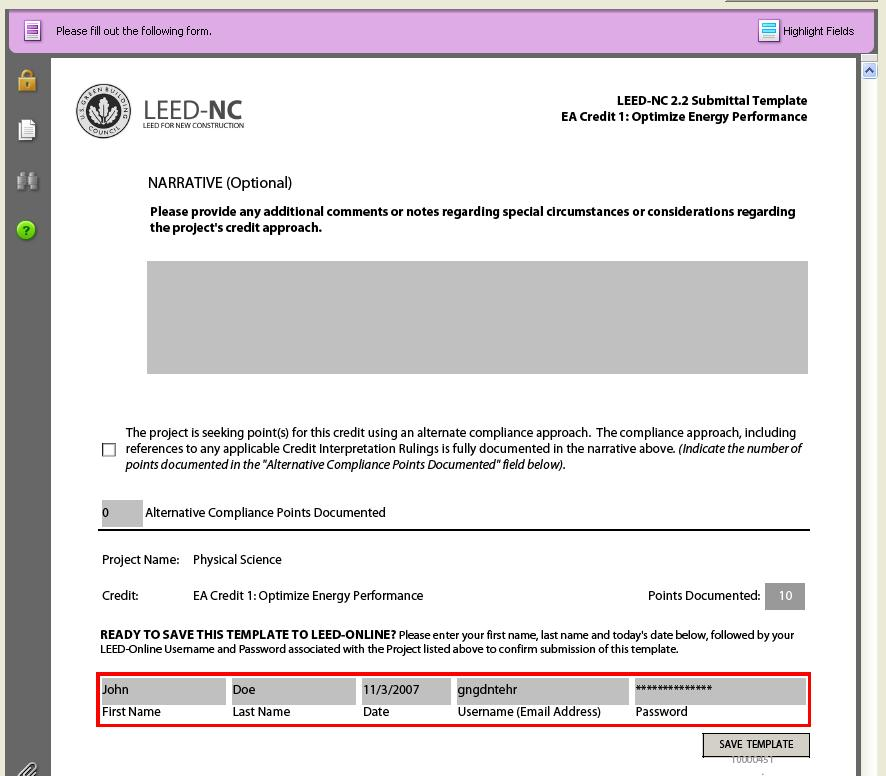
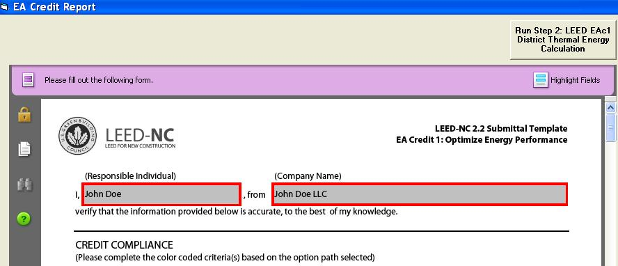
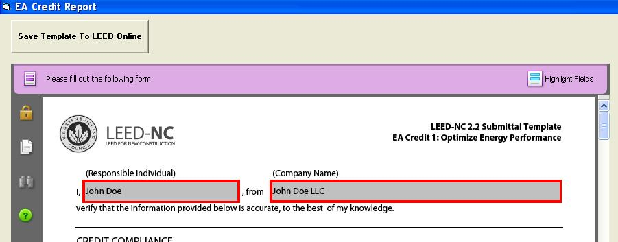

District Thermal Energy Management for LEED
|
District Thermal Energy Management for LEED |
EnergyGauge Summit allows users to perform the steps required to incorporate district heating and cooling in their proposed building as per requirements from USGBC. Since EnergyGauge will automatically create the ASHRAE Appendix G baseline building against which the proposed building is evaluated to calculate LEED points, the baseline building requirements when the proposed building has district cooling and heating are also handled automatically by the software.
Calculating LEED district heating and cooling is a two step process as outlined in the documentation provided on the USGBC website.
District Thermal Energy Management - STEP 1:
If the user’s proposed building contains district heat and cooling, the first step requires the user to create a proposed building in EnergyGauge using any of the 3 available systems that allow purchased heating and cooling to be specified. The three systems are:
The user must also add the purchased heating and cooling cost in the utilities and climate tab as shown in figure below.

Once the utilities have been included, the user needs to specify the proposed building features including all the HVAC systems, building envelope components, internal equipment and other proposed building inputs including user entered profiles and schedules as applicable to the proposed building. When all other additional input LEED requirements have been entered, the user should run the ‘LEED EAc1 Online Submittal’ menu from the ‘Calculate’ menu option. This will run the LEED EAc1 simulation for the proposed building. The software will automatically create the baseline building for Step 1 of the LEED simulation. The baseline building will also use the same systems and purchased heating and cooling utility rates as specified for the proposed building.
The user should also include in the proposed model of the building an on-site local plant that will act as a virtual substitute for the district thermal heating and cooling plant. The efficiencies of this on-site virtual plant should match that of the district heating and cooling set-up as per official USGBC requirements.
District Thermal Energy Management - STEP 2:
USGBC requires that the Step 2 of simulation be run only if the user’s proposed building model is able to meet and exceed a minimum of 2 EAc1 LEED points as compared to the Appendix G baseline building energy use. If this requirement is satisfied when the first step of the simulation is run, the LEED EAc1 PDF output for the can be saved by the user as shown in figure below.

The saved output from Step 1 is required as supporting documentation for the Step 2 results when the final submission for the LEED points is done. Once the Step 1 output is saved, a button to run Step 2 of the LEED simulation will become visible as shown in the figure below. Running Step 2 will then create a new proposed building model with modified HVAC systems running of the local virtual plant that is entered before Step 1 is initiated. The baseline building model for Step 2 is calculated as per ASHRAE Appendix G requirements.

The EnergyGauge software will then display the LEED EAc1 PDF output for Step 2 as shown in figure below. The output can directly be uploaded to the LEEDOnline website by clicking the ‘Save template to LEEDOnline’ button on the interface.

The user is required to submit all other supporting documentation to the LEEDOnline website as per USGBC requirements.